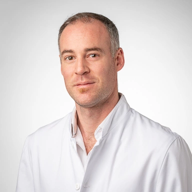

Suivi gynécologique & contrôle annuel Gynecological Follow-up & Annual Check-up
Examens de routine, conseils et prise en charge des troubles gynécologiques courants. Routine exams, guidance, and management of common gynecological conditions.
Cabinet de Gynécologie et Obstétrique · Lausanne Obstetrics & Gynecology Practice · Lausanne
Le Dr Georgios Dafereras vous reçoit à Lausanne pour un suivi gynécologique et obstétrical personnalisé, dans un cadre discret et bienveillant. Dr Georgios Dafereras welcomes you in Lausanne for personalized gynecological and obstetric care, in a discreet and caring environment.
Prendre rendez-vous en ligne Disponibilités en temps réel via OneDoc →
Le Médecin About the Doctor
Gynécologue-Obstétricien, spécialisé dans le suivi de grossesse, la santé gynécologique et la médecine préventive de la femme. Obstetrician-Gynecologist, specializing in pregnancy care, gynecological health, and preventive women's medicine.
Le Dr Dafereras accueille ses patientes au cœur de Lausanne avec une approche humaine, à l'écoute et rigoureuse. Chaque consultation est pensée pour offrir le temps et la clarté nécessaires à des décisions de santé éclairées, dans un climat de confiance et de respect. Dr Dafereras welcomes his patients in the heart of Lausanne with a human, attentive, and rigorous approach. Every consultation is designed to offer the time and clarity needed for informed health decisions, in an atmosphere of trust and respect.
Parlant couramment français, anglais, italien et grec, il accompagne une patientèle locale et internationale tout au long des grandes étapes de la vie féminine : adolescence, grossesse, maternité, ménopause. Fluent in French, English, Italian, and Greek, he supports a local and international patient base through the major stages of a woman's life: adolescence, pregnancy, motherhood, and menopause.
Prestations Services
De la première consultation au suivi post-natal, un accompagnement médical complet et personnalisé. From the first consultation to postnatal follow-up, complete and personalized medical care.
Examens de routine, conseils et prise en charge des troubles gynécologiques courants. Routine exams, guidance, and management of common gynecological conditions.
De la première consultation de grossesse à l'accouchement, un accompagnement complet et coordonné. From the first pregnancy consultation to delivery, complete and coordinated care.
Échographies réalisées directement au cabinet. Ultrasound imaging performed directly on-site.
Conseil et pose de moyens contraceptifs adaptés à chaque situation. Guidance and fitting of contraceptive methods tailored to each situation.
Accompagnement personnalisé des symptômes et des traitements liés à la ménopause. Personalized support for menopause symptoms and treatment options.
Prise en charge chirurgicale des pathologies gynécologiques, avec suivi pré- et post-opératoire. Surgical care for gynecological conditions, with pre- and post-operative follow-up.
Prise en charge rapide des situations urgentes liées à la grossesse ou à la santé gynécologique. Prompt care for urgent pregnancy-related or gynecological situations.
Le cabinet accueille volontiers les nouvelles patientes, quel que soit le motif de consultation. The practice welcomes new patients, for any type of consultation.
Questions fréquentes Frequently Asked Questions
Le cabinet se trouve Avenue Marc-Dufour 4, 1007 Lausanne, au centre-ville, facilement accessible en transports publics. The practice is located at Avenue Marc-Dufour 4, 1007 Lausanne, in the city centre, easily accessible by public transport.
Les consultations sont proposées en français, anglais, italien et grec. Consultations are offered in French, English, Italian, and Greek.
Lundi, mardi, jeudi et vendredi de 8h00 à 12h00 et de 13h00 à 17h00. Fermé le mercredi, le samedi et le dimanche. Monday, Tuesday, Thursday and Friday from 8:00 to 12:00 and 1:00 to 5:00 PM. Closed Wednesday, Saturday, and Sunday.
En ligne via OneDoc (disponibilités en temps réel) ou par téléphone au 021 312 82 66. Online via OneDoc (real-time availability) or by phone at 021 312 82 66.
Oui, le cabinet accueille volontiers les nouvelles patientes, quel que soit le motif de consultation. Yes, the practice welcomes new patients, for any type of consultation.
Suivi gynécologique, contrôle annuel, suivi de grossesse, échographie, contraception, ménopause, chirurgie gynécologique, ainsi que les urgences gynécologiques et obstétricales. Gynecological follow-up, annual check-up, pregnancy care, ultrasound, contraception, menopause, gynecological surgery, as well as gynecological and obstetric emergencies.
Témoignages Testimonials
Contact Contact
Le cabinet est situé au centre de Lausanne, facilement accessible en transports publics. The practice is located in central Lausanne, easily accessible by public transport.